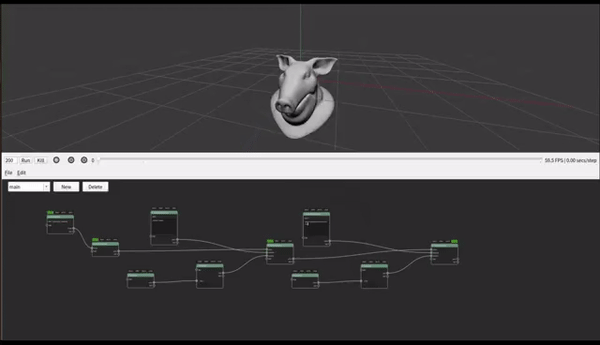

ZENO中的Z{f(x)}功能¶
Z{f(x)}是zeno使用的脚本语言，该脚本语言语法简便，可用于描述一个简单的数学公式，一经实现，可并行地运行在CPU或者GPU设备上，是场景编辑的强大工具。
一个简单的ZFX使用场景如下所示：

在这个场景中每个frame， zfx所表达的运算会被并行地施加给prim端口连入的几何图形，该根据ZFX所述， 该物体的pos会从它最初的位置被沿着法线方向往复反转， 其中time是我们从参数列表中获取进来的系统级变量， 它由GetTime函数来得到。 这个案例的运行结果如下所示：
@符号表示这个变量属于被修改的primitive, 或者原primitive没有, 会被添加上去. $的意思是这是一个dict传递进入的变量. 此外pos nrm clr vel等关键字, 是保留关键字, 是zeno系统的一般假设